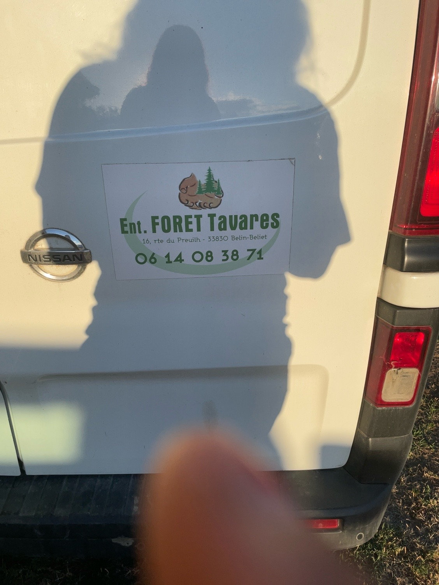

Remolques bajo solicitud para particulares, trabajos ligeros y necesidades puntuales.
Alquiler, material y trabajos exteriores
FORET Tavares
Empresa local para alquilar remolques, solicitar trabajos forestales, desbrozar terrenos o transportar madera cerca de Belin-Béliet.
Dirección16, route du Preuil, 33830 Belin-Béliet
ZonaGironde y municipios cercanos
IdiomasFrancés, español y portugués
Servicios principales
Una web sencilla, profesional y rápida, pensada para conseguir llamadas, WhatsApp y solicitudes de presupuesto.
Material exterior y forestal según disponibilidad y tipo de trabajo.
Intervenciones locales de mantenimiento, corte, preparación y limpieza de zonas arboladas.
Limpieza de terrenos, accesos y espacios exteriores antes de temporada o de una obra.
Apoyo para transporte y manipulación según distancia, volumen y disponibilidad.
Servicios complementarios alrededor de la casa, el terreno y los accesos.
Material y disponibilidad
La disponibilidad debe confirmarse por teléfono antes de reservar. Los nombres exactos pueden ajustarse con Antonio antes de publicar.
- Fotos reales del vehículo, remolques, material y trabajos terminados.
- Solicitud simple con nombre, teléfono, servicio, fecha y mensaje.
- Acceso directo a llamada, WhatsApp y Google Maps.

Galería
Espacios preparados para fotos optimizadas del vehículo, remolques, maquinaria y trabajos realizados.
- Empresa
- Ent. FORET Tavares
- Dirección
- 16, route du Preuil, 33830 Belin-Béliet, France
- Teléfono
- 06 14 08 38 71
- Zona
- Belin-Béliet, Gironde y alrededores
Pedir presupuesto
Formulario sencillo con RGPD, preparado para conectarse al correo confirmado por Antonio.